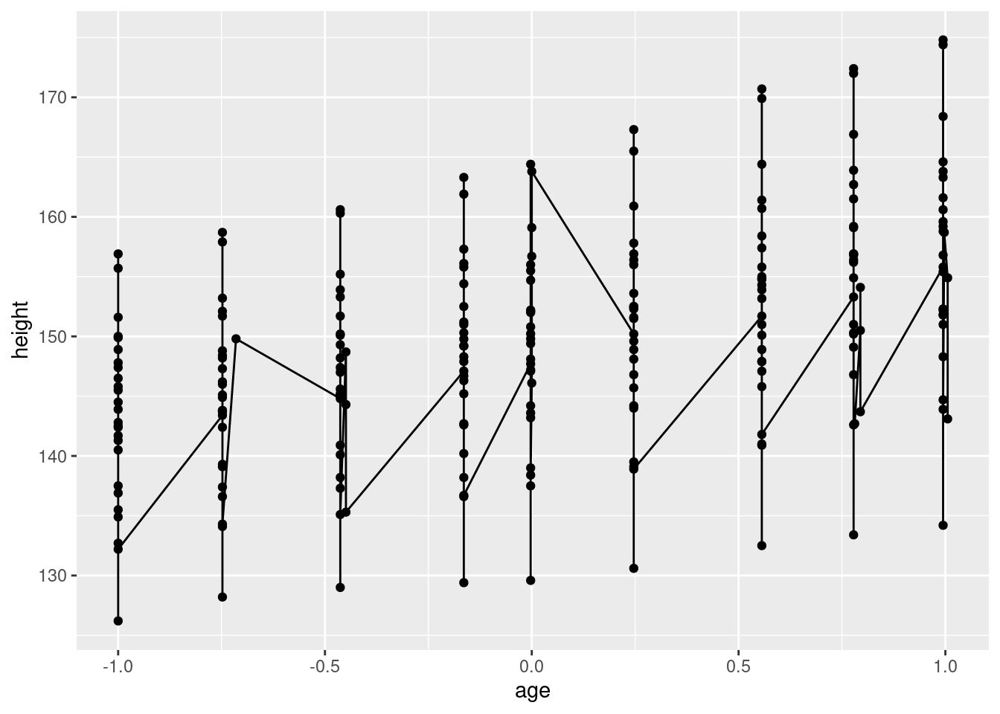
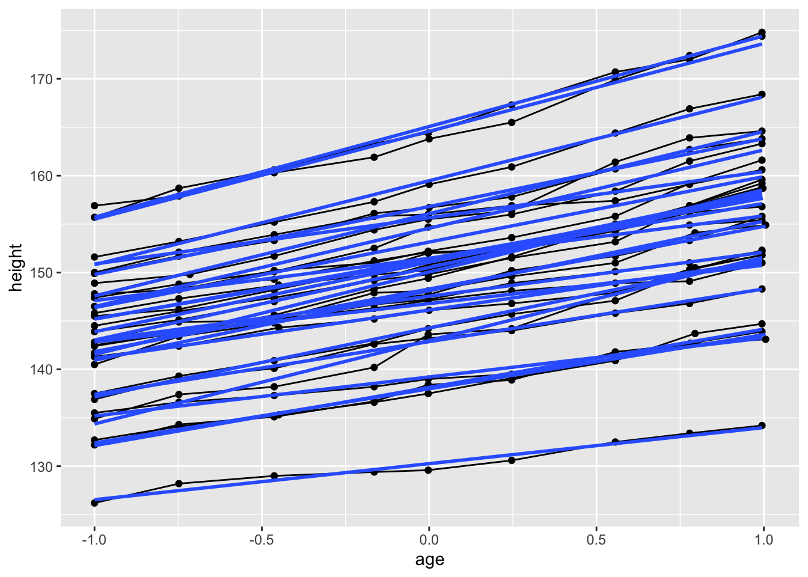
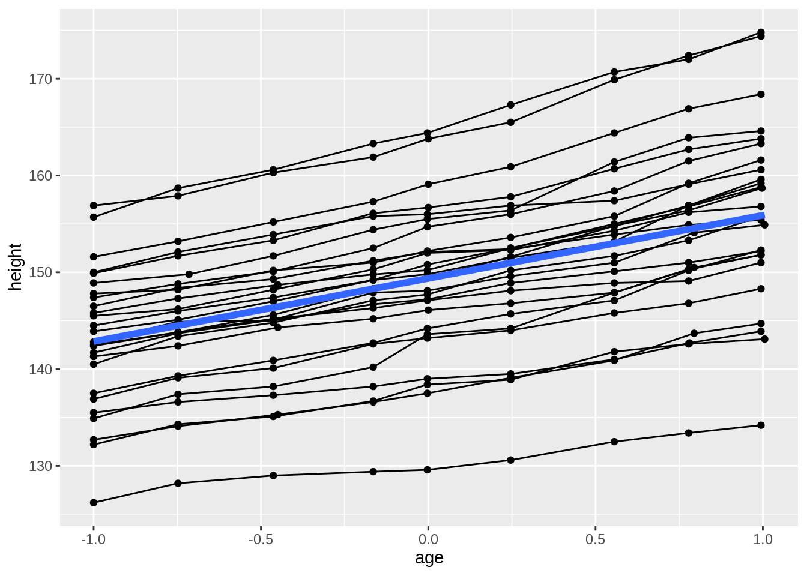
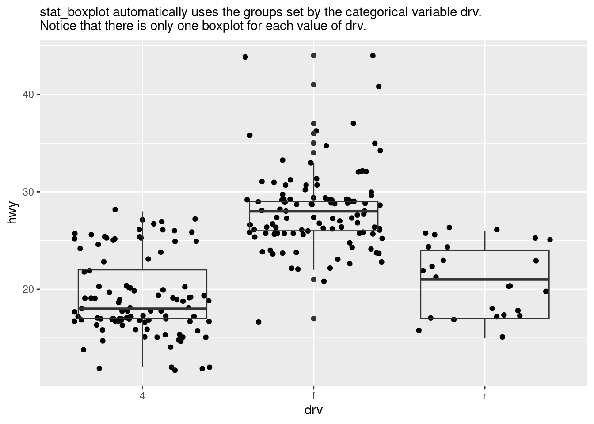
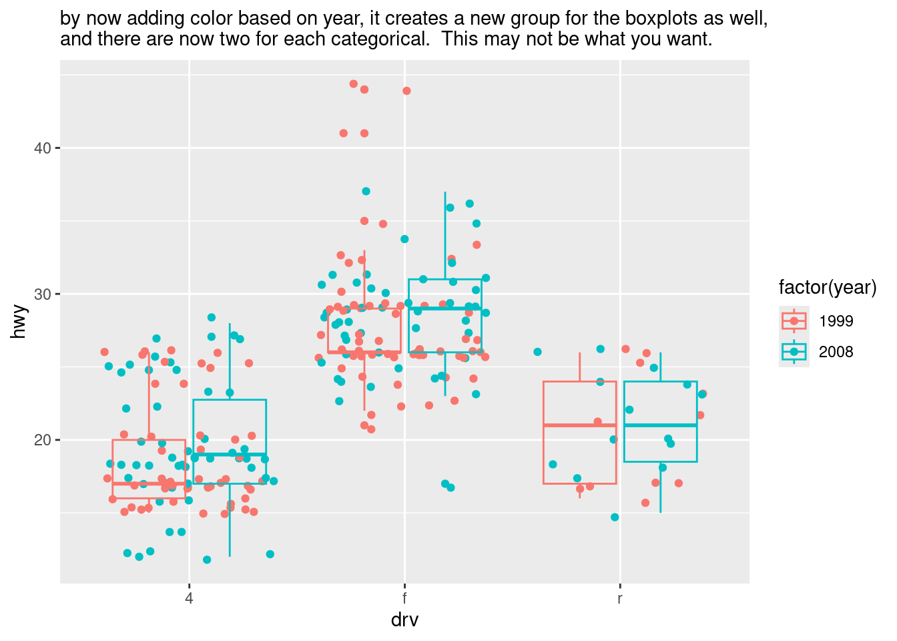
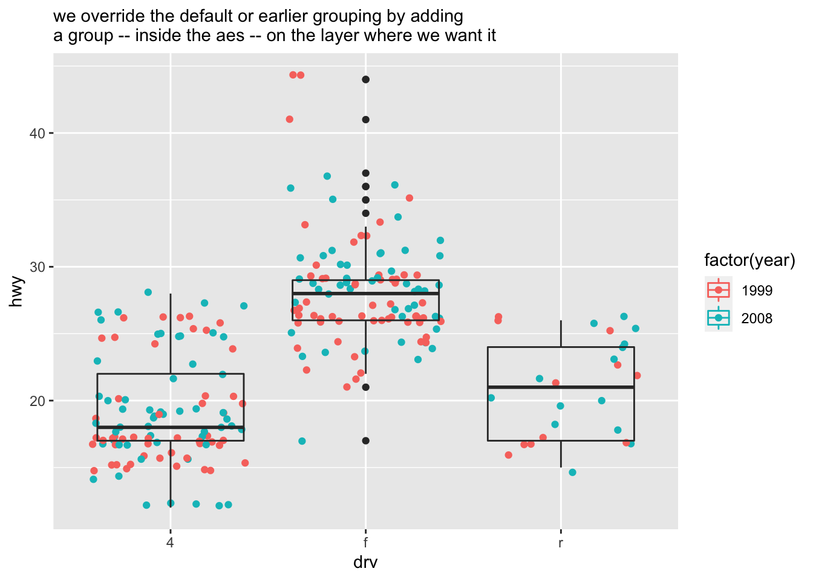
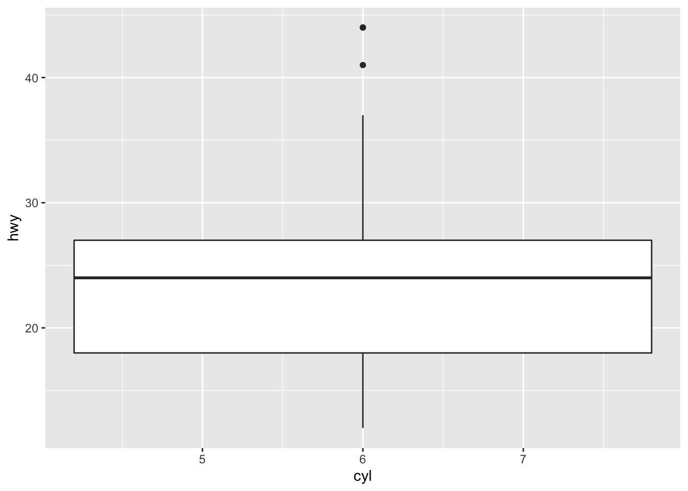
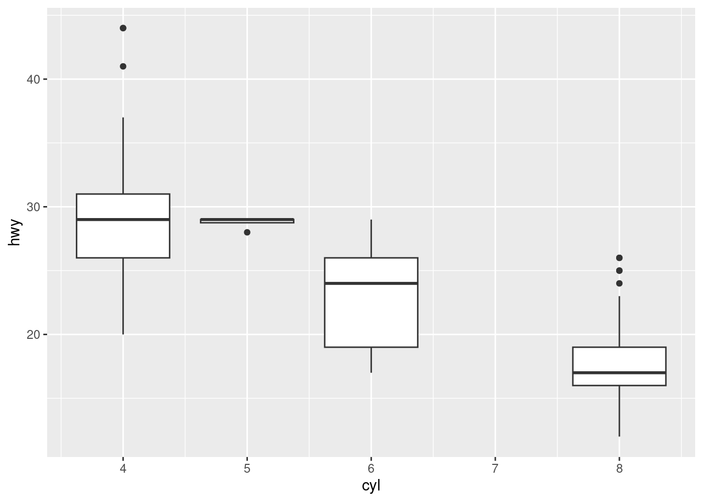
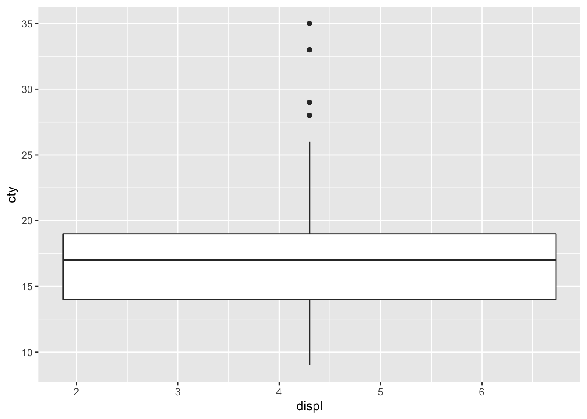
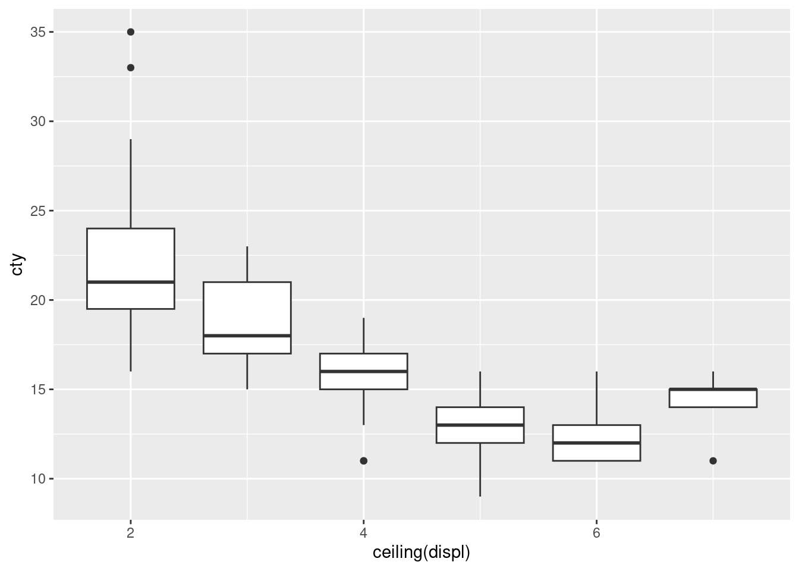

4.4 From the ggplot2 book
- dataset called Oxboys which shows the age and corresponding height of 26 boys from Oxford.
- also a longitudinal study.
- note that the age is standardized.
## Grouped Data: height ~ age | Subject
## Subject age height Occasion
## 1 1 -1.0000 140.5 1
## 2 1 -0.7479 143.4 2
## 3 1 -0.4630 144.8 3
## 4 1 -0.1643 147.1 4
## 5 1 -0.0027 147.7 5
## 6 1 0.2466 150.2 6
## 7 1 0.5562 151.7 7
## 8 1 0.7781 153.3 8
## 9 1 0.9945 155.8 94.4.1 Multiple Groups, One Aesthetic
As the book says:
In many situations, you want to separate your data into groups, but render them in the same way. In other words, you want to be able to distinguish individual subjects but not identify them.
- sometimes you want the individual geom to be a group of observations for the same individual.
- you do this by adding a group argument to the aesthetic.
- If you’re trying to figure out which variable to use as the grouping variable, fill in the blank “I have multiple observations for each _____”. Or for longitudinal studies, “I want to plot one line over time for each _____”.
What’s the grouping variable for Oxboys?
In the case of Oxboys, we want to plot a line over time for each boy, so Subject is the grouping variable in the aesthetic.

- incorrectly specifying the grouping variable leads to a “characteristic sawtooth appearance”.

4.4.2 Different Groups on Different Layers
From the book:
Sometimes we want to plot summaries that use different levels of aggregation: one layer might display individuals, while another displays an overall summary.
- now that we have plotted individual geoms, let’s add a collective geom which is the trendline for all boys together.
ggplot(Oxboys, aes(age, height, group = Subject)) +
geom_line() +
geom_point() +
geom_smooth(method = "lm", se = FALSE)## `geom_smooth()` using formula 'y ~ x'
- something doesn’t look right
- expecting a collective geom (one summary line for all subjects), but we got individual geoms again – a trendline for each individual instead of a trendline for all individuals.
- “grouping controls both the display of the geoms, and the operation of the stats: one statistical transformation is run for each group”.
- we got multiple
geom_smooths because we had the grouping variable in theggplotline so the grouping flows down to all layers of the plot - to get what we intend, we need to uncouple the grouping variable at the
ggplotlayer and add it where we want the grouping to happen, namely only at thegeom_linelayer. That allows the default grouping from theggplotlayer (i.e., no special grouping or just group on the whole dataset) to flow down to thegeom_smoothlayer.
ggplot(Oxboys, aes(age, height)) +
geom_line(aes(group = Subject)) +
geom_point() +
geom_smooth(method = "lm", size = 2, se = FALSE)## `geom_smooth()` using formula 'y ~ x'
4.4.3 Overriding the Default Grouping
In the last exercise, we finally got the grouping right.
This hints at the approach of overriding the default grouping.
By adding the grouping to geom_line, we overrode the default grouping, which was “no special grouping”.
Here’s another example to help illustrate this point a little better. Thanks to this blog post.
Subtitles are added to these plots to describe what’s going on.
ggplot(mpg, aes(drv, hwy)) +
geom_jitter() +
stat_boxplot(fill = NA) +
labs(subtitle = "stat_boxplot automatically uses the groups set by the categorical variable drv.\nNotice that there is only one boxplot for each value of drv.")
ggplot(mpg, aes(drv, hwy, color = factor(year))) +
geom_jitter() +
stat_boxplot(fill = NA) +
labs(subtitle = "by now adding color based on year, it creates a new group for the boxplots as well,\nand there are now two for each categorical. This may not be what you want.")
ggplot(mpg, aes(drv, hwy, color = factor(year))) +
geom_jitter() +
stat_boxplot(fill = NA, aes(group = drv)) +
labs(subtitle = "we override the default or earlier grouping by adding\na group -- inside the aes -- on the layer where we want it")
4.4.4 A couple of exercises
## # A tibble: 2 × 11
## manufacturer model displ year cyl trans drv cty hwy fl class
## <chr> <chr> <dbl> <int> <int> <chr> <chr> <int> <int> <chr> <chr>
## 1 audi a4 1.8 1999 4 auto(l5) f 18 29 p compa…
## 2 audi a4 1.8 1999 4 manual(m5) f 21 29 p compa…#Draw a boxplot of hwy for each value of cyl, without turning cyl into a factor. What extra aesthetic do you need to set?
# Wrong... but cyl is an integer data type -- are integers considered continuous?
ggplot(mpg, aes(cyl, hwy)) +
geom_boxplot()## Warning: Continuous x aesthetic -- did you forget aes(group=...)?

#Modify the following plot so that you get one boxplot per integer value of displ.
ggplot(mpg, aes(displ, cty)) +
geom_boxplot()## Warning: Continuous x aesthetic -- did you forget aes(group=...)?
# probably better ways to do this, especially ways to make the boxplot line up with the x-axis
ggplot(mpg, aes(x = ceiling(displ), cty, group = ceiling(displ))) +
geom_boxplot()
4.4.5 Matching Aesthetics to Graphic Objects
(Not covered in the preso)